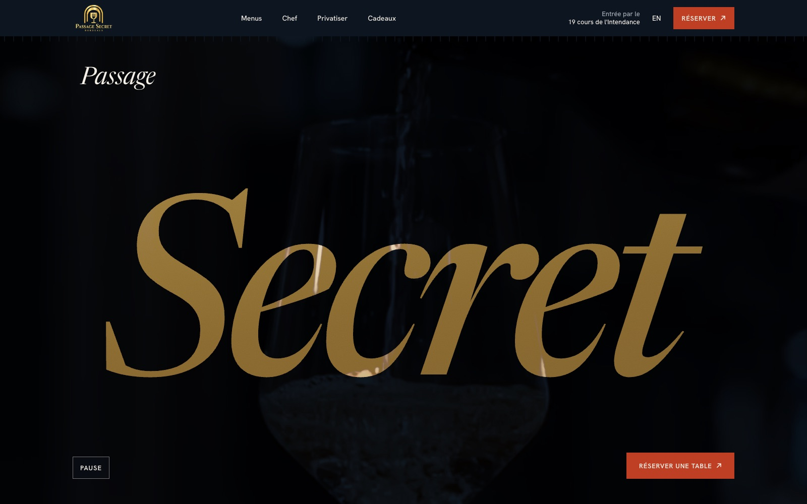
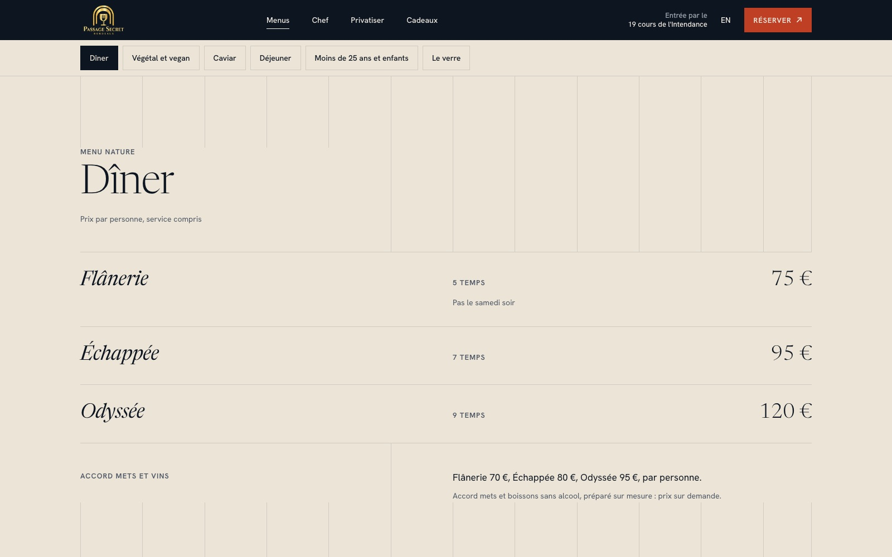
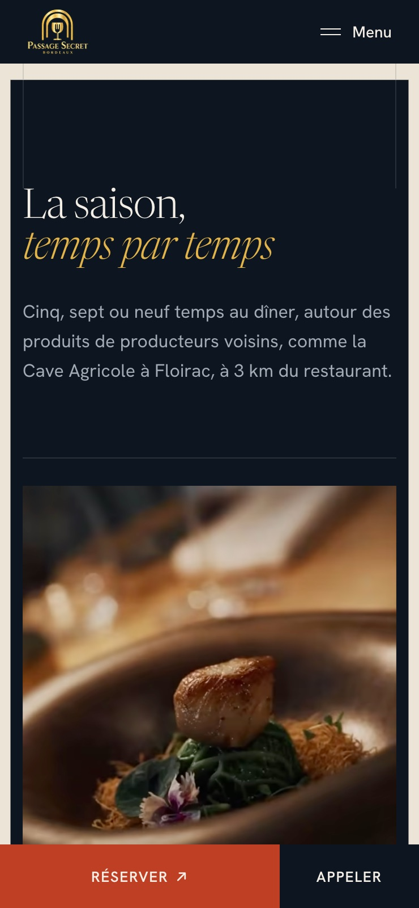

Passage Secret
Refonte du site d'un restaurant gastronomique de Bordeaux, 2026. Mené seul, en quelques jours. Mon rôle : arborescence, parcours de réservation, direction artistique, intégration, version française et anglaise. HTML, CSS, JavaScript, avec des agents Claude Code.
Projet personnel, non commandé, sans lien avec le restaurant, jamais mis en ligne.

Le projet
Un site qui avait vieilli.
Après une veille autour de Bordeaux, je me suis arrêté sur la restauration, puis sur ce restaurant gastronomique du Passage Sarget. Son site est simple et convertit sans doute. En le relevant, j'ai noté deux outils de réservation selon l'écran, une version anglaise restée en page de démonstration et une page Cadeaux introuvable. J'ai gardé ses pages et ses contenus, puis je l'ai refait.

On s'y retrouve.
Le menu est accessible depuis toutes les pages, sous les mêmes libellés qu'avant : Menus, Chef, Privatiser, Cadeaux. La page Menus se lit comme une carte : une ligne par formule, avec le nombre de temps et le prix, et les menus en onglets au-dessus (dîner, végétal et vegan, caviar, déjeuner, le verre). Pierre claire et bleu nuit portent le tout, Réserver reste en haut. Tout existe en français et en anglais, page pour page.

Réserver en un clic.
C'était un petit projet, je ne voulais pas m'y éterniser. Une veille rapide, puis l'essentiel : la structure d'abord, le menu, la réservation. Un seul outil de réservation sur tout le site, un bouton Réserver en haut de chaque page et, sur mobile, une barre Réserver et Appeler toujours visible. Le rouge ne sert qu'à ça. Une fois la structure posée, j'ai ajouté la vidéo en boucle sur l'accueil et les animations.

Ce que j'en retiens.
Aller vite oblige à choisir l'essentiel : trouver le menu, réserver.